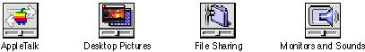

Icons
Desktop icons for control panels should be based on standard control panel icon designs, with the control slider on either the left side or the bottom. Figure 6-7 shows some examples of control panel icons.Figure 6-7 Desktop icons based on the standard control panel icon
